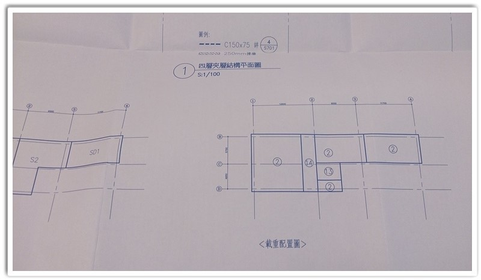

目前在繪圖這個行業轉變很大～
早期時代工程圖說從手繪開始，常常要繪製在「原圖」描圖紙，然後透過「曬圖行」製作「藍曬圖」！
通常繪製「原圖」時墨水都是用黑色的，而「藍曬圖」就是把「原圖」夾帶在「感光紙」，一起輸送到「曬圖機」中，之後「感光紙（黃色）」就會變成「藍曬圖」簡稱「藍圖」，就是紙張變成藍色，圖面線條也變成藍色。
「原圖」都是唯一一張的，如果要複製還是必須透過「曬圖行」製作「二原圖」，簡單說就是大圖複印（費用昂貴）！
那為什麼都要靠「曬圖行」呢，因為現場施作看的工程圖說都是「A1 尺寸（841mm x 594mm）」，一般小型事務所很難會有「A1 出圖機」及「曬圖機」，而且圖紙數量眾多就必須倚賴「曬圖行」的專業級「曬圖機」快速批次輸出作業！
接著電腦繪圖時代來臨，「原圖」不再是手繪方式，只需要將圖面「PDF 檔案」提供給「曬圖行」，即可輸出「原圖」供「藍曬圖」製作使用。
未來申請「建築執照作業」時需要作副本圖，常常需要很多份圖，這時就可以透過「藍曬圖」完成份數需求。但是公司內也就會存在很多「原圖」，如何存放保管便成為一個問題！
現在可以直接請「曬圖行」輸出「A1 數位藍圖」，也就沒有存放「原圖」問題，同時不用再花費製作「原圖」，支出費用大大減少喔～
還有送照流程時需要將圖面折成 A4 大小，方便送審作業（各縣市折圖方式不同）～

